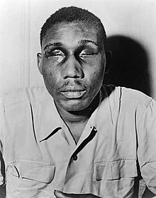
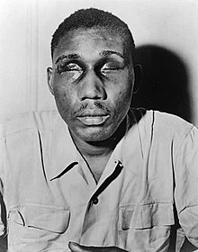

1946
Isaac Woodard
Een andere veteraan, Isaac Woodard, vroeg tijdens een tussenstop aan de buschauffeur of er tijd was om even naar het toilet te gaan. De chauffeur vond deze vraag zo brutaal dat hij de politie belde. Woodard werd gearresteerd en opgesloten. In zijn cel werd hij door agenten zo lang op zijn hoofd geslagen dat hij voortaan blind door het leven zou gaan.
Zwarte veteranen die in deze oorlog hebben gevochten… Ze realiseren zich niet dat de echte strijd in Amerika nog maar net is begonnen.
 
